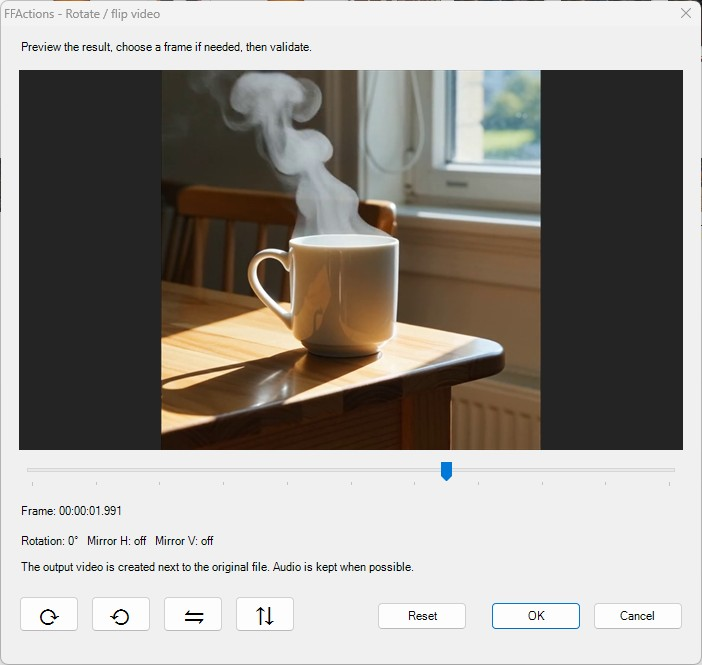

Video
Cut video, crop video, create GIF, resize video, rotate / flip, interpolate, compress, convert, extract audio and remove audio.
mp4 · mkv · avi · mov · webm · m4v
Windows context-menu media tools
Process videos, audio files and images without opening heavy software. FFActions adds focused tools directly to the Windows context menu.
Each operation creates an output next to the original file and keeps the source untouched. Simple dialogs, clear options, local processing.

Features
Cut video, crop video, create GIF, resize video, rotate / flip, interpolate, compress, convert, extract audio and remove audio.
mp4 · mkv · avi · mov · webm · m4v
Cut audio with waveform preview, convert, change speed, change pitch, reverse and compress audio files.
mp3 · wav · flac · m4a · ogg
Resize, crop, convert, compress, rotate / flip and convert images to icon files.
png · jpg · jpeg · webp · bmp · ico output
FFActions runs locally on Windows and uses FFmpeg / FFprobe under the hood. It is open source and focused on quick everyday operations.
Screenshots

Live preview, dual-handle timeline, frame and time inputs.

Preview frame, ratio presets, center and reset controls.

Waveform preview, selection playback, remove or silence selection.

Pixel and percentage resize with automatic ratio handling.

Resolution, FPS and quality presets.

Semitone and percentage controls with optional duration preservation.

Visual preview with direct transform buttons.

Compact direct-click dialogs for conversion actions.
Download
Get the latest installer from GitHub Releases, or inspect and build the source manually.